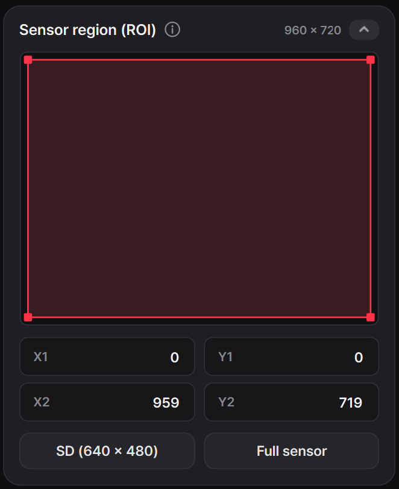
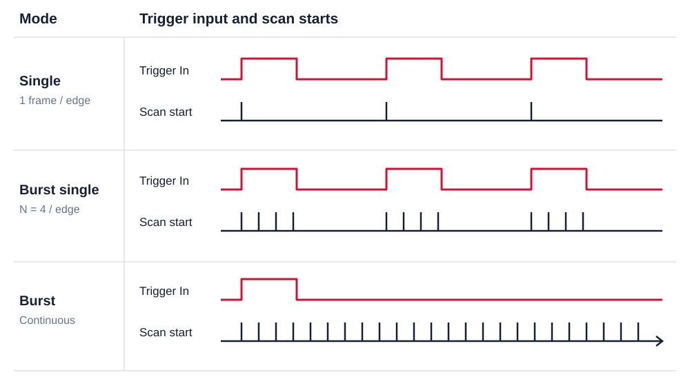

센서 제어 기능 확장
센서 설명 시트의 제어 항목을 기존 Viewer와 대조해, 레지스터로 지원되지만 화면에서 사용할 수 없던 기능을 찾아 직접 추가했습니다. 반전·이벤트 극성·ROI부터 외부 신호 설정까지, 센서 동작을 이해하고 실제 조작 기능으로 연결한 과정을 정리합니다.
1. 센서 기능 검토
기존 Viewer에서 카메라를 연결하고 영상을 보는 것은 가능했지만, 센서가 제공하는 모든 제어 항목을 촬영 화면에서 바로 사용할 수 있는 것은 아니었다. 센서 설명 시트를 읽으며 각 기능이 출력 데이터와 읽기 순서에 미치는 영향을 정리하고, 이미 구현된 항목과 추가할 항목을 대조했다.
그 결과 영상 방향, 이벤트 극성, 출력 영역과 외부 신호를 촬영 목적에 맞게 조절할 수 있도록 기능을 확장했다. 작업할 때는 레지스터 주소를 입력하는 창을 늘리기보다, 사용자가 바꾸려는 조건을 선택하면 필요한 레지스터만 갱신되도록 했다. 읽어온 현재 설정을 UI에 표시하고, 카메라 모델과 촬영 상태에 따라 사용할 수 있는 항목도 구분했다.
기능 하나를 검토할 때는 세 가지를 이어서 확인했다. 먼저 설명 시트에서 해당 설정이 센서의 어느 동작을 바꾸는지 읽고, 기존 setfile과 SDK에서 이미 사용하는 값을 찾은 뒤, Viewer의 조작·표시와 연결했다. 같은 레지스터에 다른 기능의 비트가 들어 있거나 여러 레지스터를 함께 바꿔야 하는 경우가 있어, 기능 이름만 대응시키는 것으로는 충분하지 않았다.
이 과정을 거쳐 화면의 선택을 센서 설정으로 바꾸는 로직과, 센서에서 읽은 값을 화면으로 되돌리는 로직을 함께 구현했다. 사용자가 요청한 상태와 실제 적용된 상태가 다를 수 있다는 점을 전제로, 조작 결과를 다시 확인할 수 있는 제어 기능으로 만드는 것이 목표였다.
| 바꾸려는 조건 | Viewer의 조작 항목 | 적용 대상 |
|---|---|---|
| 장착 방향 | Sensor flip | 센서에서 출력하는 좌표 방향 |
| 관찰할 밝기 변화 | Event output | ON·OFF 이벤트의 출력·변환 |
| 관찰 영역 | Sensor region (ROI) | 센서 스캔 범위와 이벤트 출력 범위 |
| 촬영 시작 조건 | External trigger | 입력 에지, 단일·연속·지정 프레임 촬영 |
| 외부 장치와의 연결 | Output signals · Clock source | 센서 타이밍 출력과 기준 클럭 선택 |
2. 화면 조작과 센서 제어의 구분
반전 기능은 어디에서 적용하느냐에 따라 의미가 달라진다. 표시 단계에서 영상을 뒤집으면 화면을 보는 방향만 바뀐다. 반면 Sensor flip은 센서 출력의 좌표 방향을 바꾸므로 이후 표시와 저장 데이터에도 그 결과가 반영된다. 두 기능을 혼동하지 않도록 센서 설정 안에 Horizontal·Vertical 선택을 배치하고, 설명도 각각의 적용 위치에 맞춰 정리했다.
Event output에서는 ON과 OFF를 함께 출력하거나 한쪽만 선택하고, 모든 이벤트를 ON으로 표현하는 모드를 연결했다. 한쪽 극성을 골라 관찰하는 것과 OFF를 ON으로 바꾸어 출력하는 것은 다른 처리이다. 선택 항목의 이름과 읽어온 레지스터 값을 대응시켜, 실제 적용 상태가 화면에 같은 의미로 나타나도록 했다.
여러 기능이 하나의 레지스터에 들어 있을 때는 특정 기능을 켜면서 다른 비트까지 덮어쓰지 않아야 한다. 그래서 적용 직전 값을 읽고, 담당하는 비트만 바꾸는 read-modify-write 방식을 사용했다. 다음은 그 연산의 핵심이다.
// mask가 지정한 비트만 바꾸고 나머지는 유지한다.
const uint32_t target = (before & ~mask) | value;before & ~mask는 변경할 비트만 지우고 나머지 설정을 남긴다. 여기에 새 값을 합친 뒤 센서에 쓰고 다시 읽어 일치하는지 확인한다. 화면에 기억해 둔 값이 아니라 적용 직전 센서 값을 기준으로 삼아, 패킷 형식처럼 다른 기능이 사용하는 설정도 보존했다.
실패했을 때도 이전 레지스터 전체를 그대로 덮어쓰지 않는다. 현재 값을 다시 읽고 이번 조작이 담당한 비트만 이전 값으로 복구한다. 예를 들어 수평 반전을 변경하는 기능은 수평 반전 비트만 되돌리고, 같은 레지스터의 극성이나 패킷 관련 설정은 유지한다. 변경 범위를 좁히는 원칙을 정상 적용과 복구에 똑같이 사용했다.
읽어온 값으로 버튼 상태를 갱신할 때는 Qt의 QSignalBlocker를 사용했다. 센서에서 읽은 값을 setChecked()나 setCurrentIndex()로 표시하는 것도 Qt에서는 변경 신호를 일으킬 수 있다. 이 신호가 다시 쓰기 함수로 이어지지 않도록, 상태를 표시하는 동안만 신호를 막고 사용자 조작과 구분했다.
이런 범위 기반 처리는 C++의 RAII와도 연결된다. 객체가 살아 있는 범위에서 신호를 차단하고 범위를 벗어나면 원래 상태로 복원하므로, 중간에 함수가 반환돼도 해제 코드를 빠뜨리지 않는다. 버튼의 선택 상태만 맞추는 작업에서 한 걸음 더 나아가, UI의 이벤트 전달이 하드웨어 제어에 어떤 영향을 주는지도 함께 다루게 됐다.
3. ROI와 센서 스캔 범위
촬영 대상이 화면 일부에만 있다면 그 영역의 이벤트를 선택해 받고 싶어진다. 이를 위해 ROI 사각형을 드래그해 이동·크기 조절하거나, 두 꼭짓점의 좌표를 직접 입력하는 기능을 추가했다. 좌표는 원래 센서의 960×720 영역을 기준으로 하며, SD 영역과 전체 영역으로 돌아가는 버튼도 함께 두었다.


ROI를 구현하면서 출력 영역을 자르는 Crop과 센서가 실제로 훑는 APS 스캔 영역을 구분했다. Crop은 스캔한 데이터 중 어떤 좌표를 내보낼지 결정하고, APS blocking은 불필요한 구간의 스캔을 건너뛰게 한다. 따라서 전송되는 이벤트 수만 줄이는 것과 센서의 읽기 작업량까지 줄이는 것은 별개이다.
Crop 좌표는 픽셀 단위로 지정할 수 있지만, APS 스캔 영역은 각 축의 40픽셀 구간 단위로 설정된다. 선택한 사각형이 잘리지 않도록 이를 포함하는 최소 스캔 영역을 잡고, 경계에 남는 부분은 Crop으로 제외하도록 연결했다. 예를 들어 오른쪽 끝을 799에서 800으로 한 칸 늘리면 출력은 한 열 늘지만, 스캔에는 다음 40열 구간이 필요해진다. 이런 경계 조건을 이해해야 작은 ROI 변경이 실제 읽기 부하에 주는 영향도 설명할 수 있었다.
따라서 같은 폭과 높이의 ROI라도 위치에 따라 포함하는 스캔 구간 수가 달라질 수 있다. 40픽셀 경계에 맞춘 영역을 한 칸 옮기면 인접 구간을 추가로 읽어야 할 수 있기 때문이다. 화면의 사각형 크기만 보는 대신, 그 사각형을 센서가 어떤 단위로 읽는지까지 함께 표시하고 설명했다.
ROI 적용에서는 여러 레지스터를 함께 변경해야 한다. 기존 값을 먼저 읽고 영역 설정을 순서대로 쓴 뒤, 읽기 확인을 통과하면 UI를 갱신하도록 했다. 중간에 쓰기나 확인이 실패하면 이전 영역을 복구하도록 구성했다. 한쪽 좌표만 바뀐 상태가 남지 않도록 처리 순서와 복구 동작까지 다룬 것이다. 사용 방법과 스캔·출력 영역의 차이는 Sensor Region 문서에 그림과 함께 정리했다.
구현은 좌표를 검사·변환하는 부분과 장치에 적용하는 부분을 나누었다. 좌표 변환부는 선택 영역을 Crop·APS 설정값으로 계산하고, 컨트롤러는 촬영 정지 확인, 기존 값 보관, 쓰기와 읽기 확인을 담당한다. 이렇게 나누면 좌표 경계 계산을 장치 없이 반복 시험할 수 있고, 통신 오류가 생겼을 때는 적용 단계에서 처리할 수 있다.
여러 값을 하나의 설정 변경으로 다루는 점에서는 트랜잭션과 비슷하다. 다만 센서에는 값이 순차적으로 쓰이므로, 중간 상태가 촬영에 사용되지 않도록 실제 standby 상태를 확인한 뒤 적용한다. 복구까지 끝난 상태를 읽어 화면에 반영하고, 복구도 실패하면 성공한 설정처럼 표시하지 않는다. ROI 조작이 클럭이나 다른 촬영 타이밍까지 뜻하지 않게 바꾸지 않도록 수정할 항목도 한정했다.
4. 외부 신호와 촬영 시점
외부 장치와 촬영 시점을 맞추려면 센서의 자체 반복 촬영 외에 입력 신호를 기준으로 시작하는 기능이 필요하다. Viewer에서 트리거의 상승·하강·양쪽 에지를 선택하고, 신호 한 번에 한 프레임을 찍을지, 지정한 수만큼 찍을지, 연속 촬영을 시작할지 설정하도록 연결했다.


Single은 선택한 입력 에지마다 한 프레임을 촬영한다. Burst single은 입력 한 번에 지정한 프레임 수를 촬영한 뒤 기다리고, Burst는 첫 입력을 시작점으로 연속 촬영을 이어간다. 입력 신호의 주파수만 설정하는 것이 아니라, 그 입력을 센서가 어떤 동작으로 해석할지까지 맞추는 구조이다.
소프트웨어에서도 외부 입력을 기다리는 상태를 정상 동작으로 다뤄야 했다. free-run에서는 데이터가 계속 들어오지만 트리거 모드에서는 입력이 올 때까지 수신이 비어 있을 수 있다. 수신 코드는 이를 일반 통신 장애와 구분해, 기다리는 요청의 메모리를 유지하고 다음 입력을 받을 수 있도록 한다. 트리거 선택을 레지스터에 쓰는 일과, 입력이 없는 시간을 프로그램이 견디는 일까지 연결되는 기능이다.
촬영 준비 순서는 트리거 모드 선택 → 촬영 시작 → 저장 시작 → 외부 펄스 입력으로 맞췄다. 새 촬영의 카운터 기준은 촬영 시작 단계에서 준비하고, 저장 버튼을 누르거나 첫 데이터가 들어오는 순간에는 중간에 다시 초기화하지 않는다. 촬영 세션과 파일 기록의 시작을 구분해야 하나의 기록 안에서 시간·순서 기준이 끊기지 않는다.
Global Reset과 Global Hold도 함께 이해해야 했다. Global Reset은 모든 픽셀의 밝기 기준을 같은 시점에 갱신하고, Global Hold는 측정한 이벤트 상태를 동시에 붙잡아 순차적으로 읽는 동안 유지한다. 외부 트리거가 촬영 시작을 맞추는 기능이라면, 이 두 기능은 센서 내부 픽셀의 측정 기준과 종료 시점을 맞추는 기능이다. 모드에 따라 필요한 조합과 타이밍이 달라지므로 화면의 선택과 내부 설정을 함께 연결했다.
DELTA 10에서는 Global hold·Global reset·Frame start·Frame end를 외부 출력으로 선택하고 펄스 폭을 설정하는 기능도 추가했다. 외부 장치가 센서의 동작 시점을 받아 사용할 수 있도록 하는 설정이다. 입력 트리거, 출력 펄스와 외부 기준 클럭은 방향과 역할이 다르므로 각각의 조작 항목과 도움말을 나눴다. 연결 위치와 전기적 조건은 Camera Interfaces, 모드별 절차는 External Signals에 작성했다.
입력과 출력 설정은 적용 순서가 달라도 서로 유지되도록 연결했다. 타이밍 출력을 선택한 뒤 Single로 바꾸는 경우와, Single을 선택한 뒤 타이밍 출력을 켜는 경우에 최종 조합이 같아야 한다. 입력 에지만 바꾸는 조작에서는 모드 전체를 다시 쓰지 않고 에지 관련 필드만 갱신해, 이미 선택한 출력과 메타데이터 설정을 보존했다.
기록에 넣는 Timestamp와 Frame index도 역할을 나누었다. Timestamp는 시간 간격을 읽기 위한 정보이고, Frame index는 몇 번째 프레임인지 구분하는 순서 정보이다. 불규칙한 외부 신호로 촬영할 때 프레임 번호 차이를 곧바로 경과 시간으로 해석하지 않도록, UI에서 선택한 메타데이터의 의미까지 설명했다.
5. FPS와 센서 타이밍
FPS 변경은 화면 갱신 간격을 바꾸는 기능이 아니라 센서의 스캔 타이밍을 바꾸는 기능이다. 한 프레임에 필요한 시간에는 픽셀·열을 읽는 시간과 열 사이의 여유 시간, 프레임 사이의 여유 시간이 함께 들어간다. 따라서 목표 FPS를 레지스터 하나에 그대로 쓰는 대신, 센서 모델과 클럭, 스캔하는 열 수에 맞는 타이밍 조합으로 바꾸어야 한다.
FrameRateController는 적용 전에 센서의 현재 클럭과 타이밍을 읽는다. 지원하는 조건에서는 타이밍 테이블이나 계산식을 이용해 목표값을 만들고, 적용 후 다시 읽어 요청한 조합과 일치하는지 확인한다. ROI 크기만 줄인 동작과, 줄어든 읽기 범위에 맞추어 고속 타이밍을 적용한 동작을 분리한 이유도 여기에 있다.
외부 클럭을 사용하는 경우에는 내부 클럭을 전제로 계산한 값으로 같은 FPS를 표시할 수 없다. 그래서 클럭 조건이 맞는 경우에만 해당 조작을 허용하고, 화면의 목표 설정과 실제 수신 프레임 속도를 구분했다. 촬영 중 타이밍을 바꿀 때는 센서를 잠시 대기 상태로 전환해 적용한 뒤 원래 실행 상태로 돌리고, 이미 정지한 센서를 설정 변경 때문에 새로 시작시키지 않도록 했다.
이 과정을 통해 해상도·FPS·이벤트 전송량을 따로 외우는 대신 연결해서 보게 됐다. 스캔할 영역과 타이밍은 센서가 얼마나 자주 읽는지를 결정하고, 장면 변화와 감도는 그 결과 얼마나 많은 이벤트가 생기는지를 결정한다. 고속 촬영 조건을 고를 때는 이 두 부분이 USB 수신과 파일 기록에 주는 부하까지 이어서 살펴야 한다.
6. 촬영 조건의 재사용
촬영 조건을 여러 레지스터 값으로만 관리하면 같은 설정을 다시 적용하기 어렵다. 감도와 촬영 속도뿐 아니라 출력 영역과 타이밍이 함께 바뀌는 경우에는 특히 그렇다. 그래서 설정을 가져오고 내보내는 기능과 setfile 적용을 연결하고, 자주 사용하는 고속 조건을 파일로 선택할 수 있도록 정리했다.
프리셋을 내보낼 때는 UI에 남아 있는 선택값이 아니라 카메라에서 읽은 값을 사용한다. 기준이 되는 setfile, 카메라 모델과 현재 제어값을 묶고, 값을 읽는 사이 설정이 바뀌지 않았는지 반복 읽기로 대조한다. 또 기준 setfile의 PLL 설정과 현재 클럭 설정이 맞는지 확인한다. 같은 타이밍 숫자라도 기준 클럭이 다르면 다른 촬영 조건이 되기 때문이다.
setfile은 단순한 주소·값 목록이 아니라 초기화 순서를 담은 파일이다. 같은 주소가 초기화 중에 쓰인 뒤 마지막에 다시 쓰일 수도 있다. 따라서 현재 값을 저장한다고 모든 줄을 새로 만드는 대신 기존 초기화 순서와 관리 대상 밖의 설정을 보존하고, 담당 항목의 최종 적용값을 갱신하도록 구성했다. 파일을 다시 가져왔을 때도 연결된 모델을 확인하고, 적용한 제어값을 센서에서 다시 읽어 비교한다.
파일 자체를 저장하는 과정에는 QSaveFile을 사용했다. 전체 내용을 임시 파일에 쓴 뒤 commit()이 성공하면 최종 파일로 바꾸는 방식이다. 재사용할 설정 파일이 일부만 기록된 상태로 남지 않도록, 데이터 구성뿐 아니라 저장 완료 여부까지 확인했다.
고속 프리셋은 해상도와 FPS를 묶어서 보아야 한다. 전체 영역을 읽는 조건과 작은 영역을 빠르게 읽는 조건은 관찰 가능한 범위가 다르다. 공개한 DELTA 10 프리셋에는 960×720에서 2,200 FPS, 352×288에서 10,000 FPS, 40×40에서 90,000 FPS 등의 설정이 있다. 작은 영역을 사용하는 프리셋일수록 촬영 대상을 그 안에 맞추는 준비가 중요하다.
단순히 높은 숫자를 고르는 메뉴가 아니라, 필요한 관찰 영역과 시간 해상도를 함께 선택하는 도구로 설명했다. 프리셋 파일과 적용 순서는 High-Speed Preset Downloads에서 확인할 수 있다.
7. 적용과 검증
새 기능은 정상적으로 값을 쓰는 경로뿐 아니라 촬영·저장 중에 바꿔도 되는지, 장치에서 읽은 값과 화면 표시가 일치하는지도 함께 처리해야 했다. 센서 출력과 ROI처럼 기록 데이터의 의미를 바꾸는 항목은 촬영과 녹화를 정지한 뒤 설정하도록 했다. 파일 재생에서는 실제 센서에 쓰는 제어를 구분하고, 선택한 카메라가 지원하는 기능만 조작할 수 있게 했다.
정지 여부도 Viewer의 버튼 상태만으로 판단하지 않는다. 수신 스레드가 멈췄더라도 센서 정지 명령이 실패했거나 수동 설정으로 센서가 다시 켜졌을 수 있다. 그래서 출력·ROI 제어에서는 저장 상태와 함께 센서의 standby 값을 읽어 확인한다. 화면, SDK와 하드웨어가 서로 다른 상태가 되지 않도록 확인 지점을 둔 것이다.
구현에서는 설정 전 읽기, 담당 비트만 변경, 쓰기 후 확인, 실패 시 복구를 하나의 흐름으로 묶었다. 자동 시험에서는 좌표 경계와 설정 조합, 읽기·쓰기 실패를 다루고, 실제 ROI 시험에서는 요청한 영역과 수신 이벤트 좌표의 범위를 대조했다. 버튼이 눌리는지만 보는 것과 센서 출력이 요청한 의미로 바뀌는지 확인하는 것은 서로 다른 단계였다.
설정 파일 시험에서는 내보내기 → 다시 읽기 → setfile 생성 후에도 값이 보존되는지를 확인하고, 관리하지 않는 초기화 줄이 순서대로 남는지도 검사한다. 서로 다른 모델의 설정, 잘못된 값 범위와 손상된 파일은 적용 전에 걸러낸다. 이렇게 계산·파일 변환을 반복 확인하는 시험과 실제 센서 출력을 보는 시험을 나누면, 문제가 좌표 변환인지 통신·적용인지 좁혀갈 수 있다.
센서 설명 시트를 읽는 작업도 이 과정에서 달라졌다. 기능 이름과 레지스터 값만 옮기는 대신, 해당 비트가 어느 처리 단계에 영향을 주는지, 다른 설정과 무엇을 공유하는지부터 확인하게 됐다. 이렇게 정리한 원리와 사용 절차를 공식 문서로 옮긴 과정은 다음 글에서 이어진다.